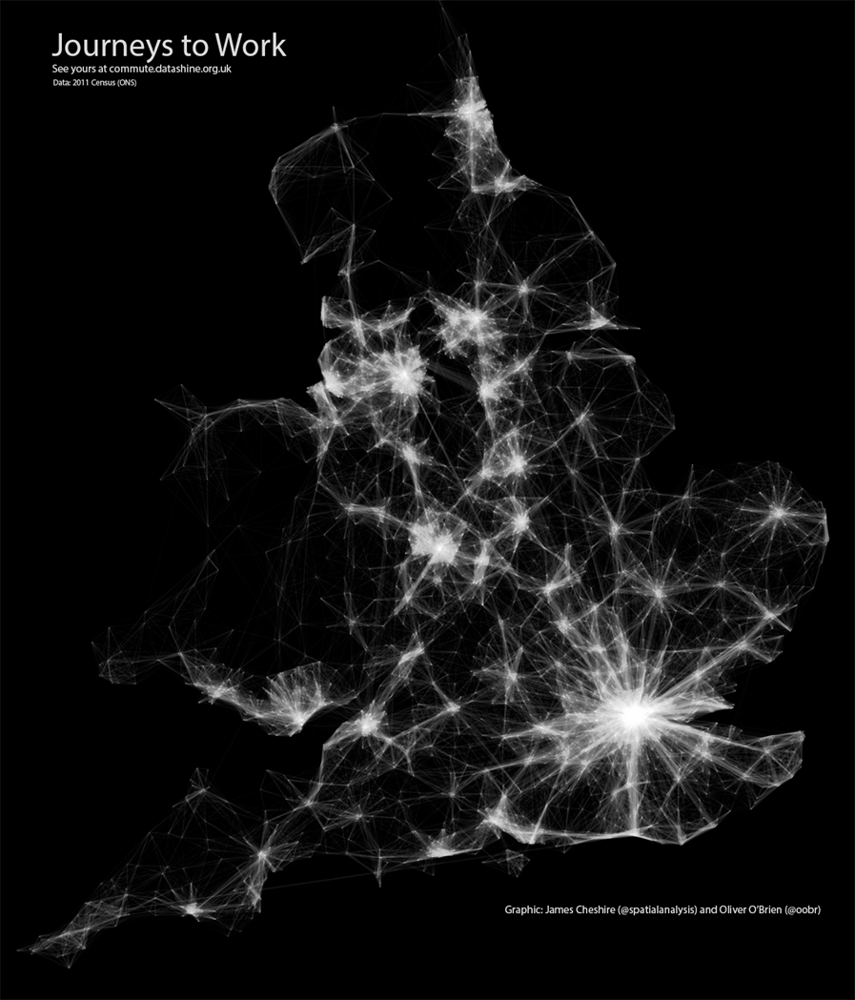
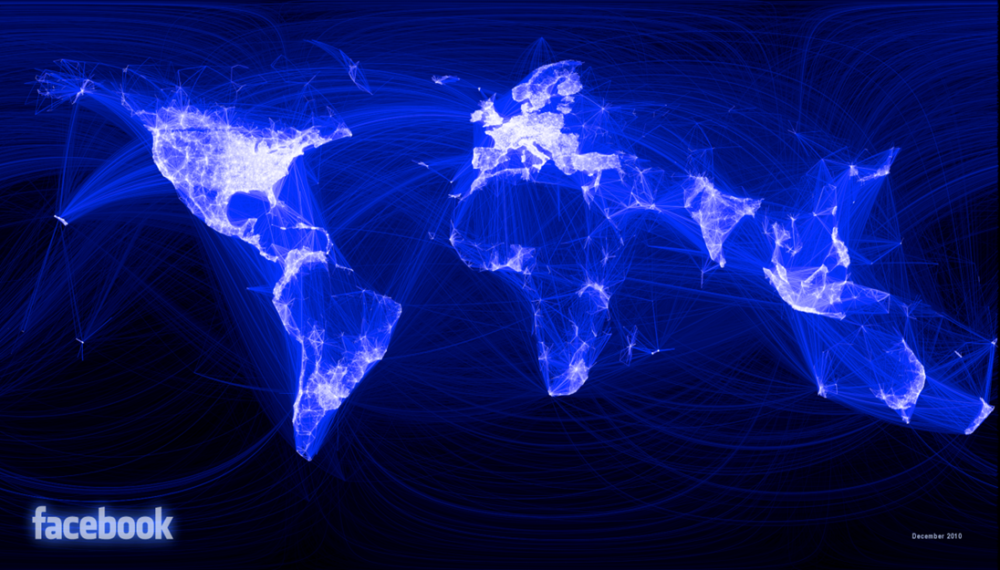
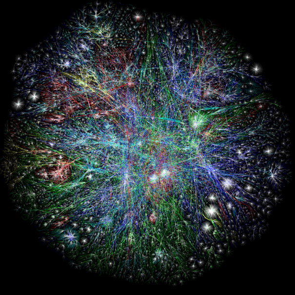
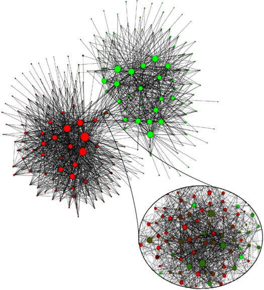
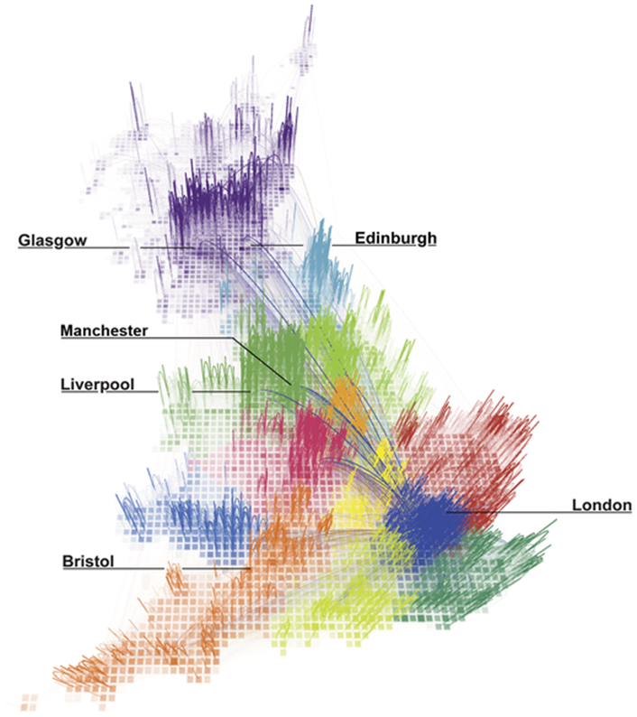

Networks
An introduction
Outline
Why networks?
Network Data
Network Measures
Why Networks
Networks are everywhere!
The focus is not on individual attributes, but…
… on who is connected to whom.
AKA networks are about relationships
Interactions, or
flows between nodes (actors, places, …)
Social Network Analysis, Graph Theory, Network Science and Complexity Theory
Scale and levels
| Level (aggregation of linkages and nodes) | Geographical scale (network boundary) | |||
|---|---|---|---|---|
| 1 – Local | 2 – Regional | 3 – Global | ||
| A -- Macro | Cities | City as a whole entity | Central place system (Christaller 1966) | |
| B -- Meso | Firms | Clusters (Porter 2000) | Regional economic intergration and functional polycentrism (e.g. Scott 2001: Boschma 2005) | Global inter-firm network (e.g. Cohen 1981) |
| C – Micro | People | A neighbourly economic suport support network (e.g. Wellman 1979) | A local labou market (e.g. Granovetter 1974) | The global economic elite (Sassen 1991) |
Source: (Neal and Rozenblat 2021)


Source: Facebook.com

Source: http://www.opte.org/
Network data
1. Directed, non-weighted networks1
Basic elements: nodes and links
Data is not arranged in vectors but on square matrices
1 and 0 represent the existence of a link
Adjacency matrix
| A | B | C | D | |
| A | 0 | 1 | 1 | 1 |
| B | 0 | 0 | 1 | 0 |
| C | 0 | 0 | 0 | 1 |
| D | 0 | 0 | 0 | 0 |
1. Directed, non-weighted networks
Basic elements: nodes and links
Data is not arranged in vectors but on square matrices
1 and 0 represent the existence of a link
Edge list
i j w A B 1 A C 1 A D 1 B C 1 C D 1 D C 1
1. Directed, non-weighted networks
Basic elements: nodes and links
Data is not arranged in vectors but on square matrices
1 and 0 represent the existence of a link
2. Undirected, non-weighted networks
Symmetrical ties
Symmetrical adjacency matrices
Adjacency matrix
| A | B | C | D | |
| A | 0 | 1 | 1 | 1 |
| B | 1 | 0 | 1 | 0 |
| C | 1 | 1 | 0 | 1 |
| D | 1 | 0 | 1 | 0 |
2. Undirected, non-weighted networks
Edge list
| i | j | w |
|---|---|---|
| A | B | 1 |
| A | C | 1 |
| A | D | 1 |
| B | A | 1 |
| B | C | 1 |
| C | A | 1 |
| C | B | 1 |
| C | D | 1 |
| D | A | 1 |
| D | C | 1 |
2. Undirected, non-weighted networks
3. Directed, weighted networks
Links are characterized by weights i.e. strength of a friendship, commuting flows, trade flows
Adjacency matrix
| A | B | C | D | |
| A | 0 | 3 | 1 | 5 |
| B | 0 | 0 | 1 | 0 |
| C | 0 | 0 | 0 | 6 |
| D | 0 | 0 | 7 | 0 |
3. Directed, weighted networks
Links are characterized by weights i.e. strength of a friendship, commuting flows, trade flows
Edge list
| i | j | w |
|---|---|---|
| A | B | 3 |
| A | C | 1 |
| A | D | 5 |
| B | C | 1 |
| C | D | 6 |
| D | C | 7 |
3. Directed, weighted networks
4. Undirected, weighted networks
Links are characterized by weights i.e. strength of a friendship, commuting flows, trade flows…
… and also have symmetrical matrices
Adjacency matrix
| A | B | C | D | |
| A | 0 | 3 | 1 | 5 |
| B | 3 | 0 | 1 | 0 |
| C | 1 | 1 | 0 | 6 |
| D | 5 | 0 | 6 | 0 |
4. Undirected, weighted networks
Edge list
| i | j | w |
|---|---|---|
| A | B | 3 |
| A | C | 1 |
| A | D | 5 |
| B | C | 1 |
| B | A | 3 |
| C | D | 6 |
| C | A | 1 |
| C | B | 1 |
| D | C | 6 |
| D | A | 5 |
4. Undirected, weighted networks
Network data: summary
4 possible combinations of network data
Directional and non-weighted (or binary)
Directional and weighted
Undirected and non-weighted (or binary)
Undirected and weighted
Nodes, aka vertices (singular: vertex)
Links or ties, edges or arcs
Conventional data: actors and attributes
Network data: actors and their relations
Network measures
Network size
\(k\) numbers of nodes
maximum number of links:
\(k(k-1)\) for directed
\(k(k-1)/2\) for undirected networks
Network density
Numbers of links / Max. number of links:
\(L/k(k-1)\) for directed
\(2L/k(k-1)\) for undirected networks
Network distance
A macro characteristic of the network ➔ efficiency
Multiple paths between two nodes
A walk is a path in which each node and each link are used once
Geodesic distance: the number of relations in the shortest possible path from one node to another
Diameter: the longest geodesic distance in the network
Reciprocity
The extent to which ties are reciprocated (if A ➔ B, then B ➔ A)
At least two different approaches:
Reciprocated ties / maximum number of ties (0.33)
Reciprocated ties / number of existing ties (0.5)
Assortativity
A bias towards connections between network nodes with similar network characteristics
Assortativity coefficient is the Pearson correlation coefficient of the degree centralities of pairs of connected nodes
Sub-structures
dyads: pair of connected nodes
triads: three connected nodes
ego-networks
cliques: the maximum number of actors who have all possible ties present among themselves; a maximal complete sub-graph
Clustering
Large proportion of links are highly “clustered” into local neighborhoods ➔ small worlds
\(C_{i} = 2 E_{i} / k_{i}(k_{i}-1)\)
the ratio between the number of edges \(E_{i}\) that exist among \(i\)’s nearest neighbors and the maximum number of these edges, where \(k_{i}\) is the number of nodes in the sub-net
AKA Transitivity
Community detection
Exploratory process
The emphasis is not on the behaviour of single entities, but on the information of who is connected to whom
“The problem of community detection requires the partition of a network into communities of densely connected nodes, with the nodes belonging to different communities being only sparsely connected” (Blondel et al. 2008, 2)
Clusters of nodes with dense connections inside the clusters, but not between the clusters
Community detection
Louvain method (Blondel et al. 2008): maximization of links inside the communities (modularity)
Network of communities extracted from a Belgian mobile phone network
Node size proportional to the number of individuals in the community
Colour represents the main language spoken in the community (red for French and green for Dutch)
What does the intermediate community of mixed colours between the two main clusters represent?

Community detection
Redrawing the Map of Great Britain from a Network of Human Interactions (Ratti et al. 2010)
Do administrative boundaries follow the more natural ways people interact across space?
Large telecommunications database in Great Britain.

Centrality measures
In social networks centrality is related with power, e.g. dominance and dependence
Micro and macro property
Position in the network
Many centrality measures
Source: schochastics.net
Degree centrality for undirected networks
The simplest centrality measure
Who has the most connections?
The number of links per node
\(D_{i} = \sum_{j}^{N} x_{ij}= \sum_{j}^{N} x_{ji}\)
Degree centrality for directed networks
Indegree: the number of ingoing links per node \(D_{i} = \sum_{j}^{N} x_{ji}\)
Outdegree: the number of outgoing links per node \(D_{i} = \sum_{j}^{N} x_{ij}\)
Degree centrality for weighted networks
\[D_{i} = \sum_{j}^{N} w_{ij} = \sum_{j}^{N} w_{ji}\]
\(w\) denotes the weight of the links
Degree cenralities
Degree cenralities
Degree cenralities
Degree cenralities
| A | B | C | D | out-degree | |
|---|---|---|---|---|---|
| A | 0 | 3 | 1 | 5 | 9 |
| B | 3 | 0 | 1 | 0 | 4 |
| C | 2 | 4 | 0 | 9 | 15 |
| D | 7 | 0 | 5 | 0 | 12 |
| in-degree | 12 | 7 | 7 | 14 |
Closeness centrality
Which node has the shortest distance to other nodes
Instead of focusing on the number of links, the focus turns to the network distances
Different definitions:
Closeness, \(c_{i} = 1/\sum_{j} d_{ij}\)
Fareness, \(c_{i} = \sum_{j} d_{ij}\)
igraphcalculates closeness
Betweenness centrality
Which nodes control information flows
How many geodesic links between actors \(i\) and \(j\) contain actor \(k\)?
\(B_{k} = \sum_{i \not=j \not=k} \frac{g_{ij}(k)}{g_{ij}}\)
Eigenvector centrality
Not all connections are equal
Connections to more central vertices are more important than connections to less central ones
It is still important to have a large number of connections, but a node with fewer and more important connections will end up being more central than a node with more and less important links
Global structure of the network: both direct links and shortest paths
Eigenvector of the adjacency matrix associated with the larger eigenvalue
PageRank centrality
The basis of Google search engine
Webpages that link to \(i\), and have high PageRank scores themselves, should be given more weight.
Webpages that link to \(i\), but link to a lot of other webpages in general, should be given less weight.
Directed networks
Iterative algorithm
Centralities
While easy to identify in simple graphs, much more difficult in large, complex networks
Various other centrality measures exist (e.g. see
igraph)Highlight different aspects of the distribution and sources of power
Source: Tranos, Gheasi, and Nijkamp (2015)
Other types of networks
Two mode networks
Multilayer
Dynamic
Spatial
See also Light and Moody (2020)
References
Blondel, Vincent D, Jean-Loup Guillaume, Renaud Lambiotte, and Etienne Lefebvre. 2008. “Fast Unfolding of Communities in Large Networks.” Journal of Statistical Mechanics: Theory and Experiment 2008 (10): P10008.
Christaller, Walter. 1966. Central Places in Southern Germany. Vol. 10. Prentice-Hall.
Hanneman, Robert A, and Mark Riddle. 2005. “Introduction to Social Network Methods.” University of California Riverside. http://faculty.ucr.edu/~hanneman/nettext/.
Light, Ryan, and James Moody. 2020. The Oxford Handbook of Social Networks. Oxford University Press.
Neal, Zachary P, and Céline Rozenblat. 2021. Handbook of Cities and Networks. Edward Elgar Publishing.
Ratti, Carlo, Stanislav Sobolevsky, Francesco Calabrese, Clio Andris, Jonathan Reades, Mauro Martino, Rob Claxton, and Steven H Strogatz. 2010. “Redrawing the Map of Great Britain from a Network of Human Interactions.” PloS One 5 (12): e14248.
Tranos, Emmanouil, Masood Gheasi, and Peter Nijkamp. 2015. “International Migration: A Global Complex Network.” Environment and Planning B: Planning and Design 42 (1): 4–22.
Footnotes
Hanneman and Riddle (2005) is a very useful online source for most of the concepts presented here.↩︎